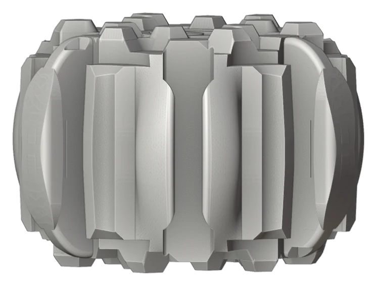

Every buoyant material has the same enemy. Water finds the pores, the seams and the places where two parts meet. Over months it adds weight, and over years it takes strength. For a bio-based composite the problem is sharper still, because the fibres themselves swell.
From the start the project set itself a high bar: whatever keeps water out must not rely on petrochemical coatings and must not shed microplastics. Plenty of marine coatings work; few meet that bar.
The 2025 study
With the Ocean Supercluster grant awarded in late 2024, a team of UBC Materials Engineering students began work in January 2025 under the supervision of two of the project's advisors, Colton Routtenberg and Zachary Huser. The brief was to validate a mineral-based waterproofing strategy: a treatment that bonds to the composite and closes its surface without an organic film. The study produced treated and untreated specimens for immersion testing and gave the project its first systematic data on water uptake.
In the same year, a related spin-off problem was being solved on the manufacturing side: a simple two-part mould, pressing fibre into an eight-inch hexagonal brick, which was float-tested in February 2025. That is where the current brick proportions come from.
Sealed cavities
The newer idea takes a different approach to the same risk. A SeaBrick gets much of its buoyancy from hollow cavities inside the brick. If the shell is ever breached, those cavities flood. Filling them with a lightweight gel, a closed-cell material that cannot take on water, means a damaged brick loses a little buoyancy rather than all of it. It also makes the inside of the brick a much less interesting place for marine growth.
Gel-sealed cavities are a concept at this stage, one of the six system approaches shown on the technology page. Like the rest of the current materials strategy, they are being designed around tests on deliberately damaged specimens, so that a good coating never hides a vulnerable core.